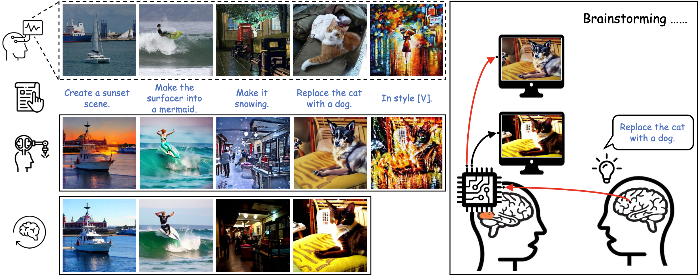
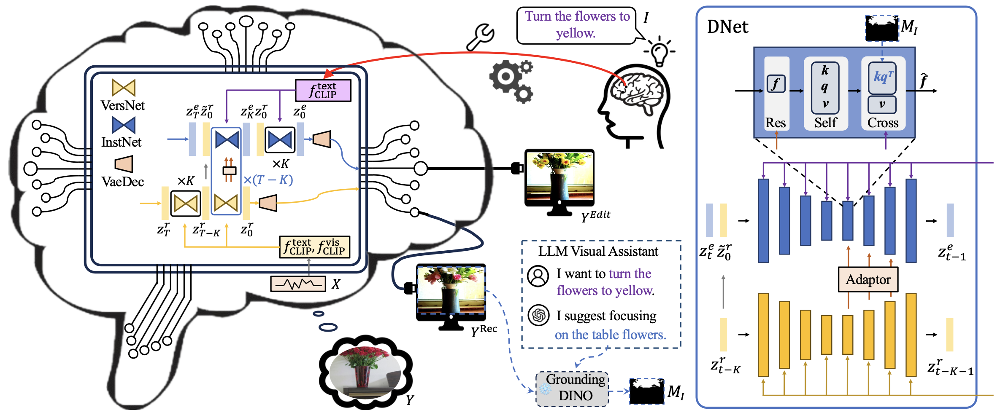

Overview of DreamConnect. Our framework uses natural language to manipulate visually stimulated brain signals. Given an fMRI signal encoding a visual stimulus and a text instruction, DreamConnect employs a dual-stream diffusion process to progressively translate the neural “dreamland” into a new visual synthesis that follows the instruction, enabling concept manipulation through direct fMRI signal modification.
Recent breakthroughs in understanding the human brain have revealed its impressive ability to efficiently process and interpret human thoughts, opening up the possibility of intervening in brain signals. In this paper, we aim to develop a straightforward framework that uses other modalities, such as natural language, to translate the original “dreamland”. We present DreamConnect, employing a dual-stream diffusion framework to manipulate visually stimulated brain signals. By integrating an asynchronous diffusion strategy, our framework establishes an effective interface with human “dreams”, and progressively refines their final image synthesis. Through extensive experiments, we demonstrate the efficacy of our method to accurately direct human brain signals in desired directions, ultimately enabling concept manipulation through direct manipulation of the functional magnetic resonance imaging (fMRI) signals. We hope that this work will motivate the use of brain signals in human–computer interaction applications.

Architecture. DreamConnect adopts a dual-stream diffusion framework. One stream processes the fMRI-derived visual signal while the other handles the language instruction. An asynchronous diffusion strategy progressively aligns the two streams, enabling fine-grained manipulation of the brain-decoded imagery according to the text prompt.
@article{sun2025dreamconnect,
title = {Connecting Dreams with Visual Brainstorming Instruction},
author = {Sun, Yasheng and Li, Bohan and Zhuge, Mingchen and Fan, Deng-Ping
and Khan, Salman and Khan, Fahad Shahbaz and Koike, Hideki},
journal = {Visual Intelligence},
volume = {3},
pages = {12},
year = {2025},
doi = {10.1007/s44267-025-00081-2},
url = {https://link.springer.com/article/10.1007/s44267-025-00081-2}
}